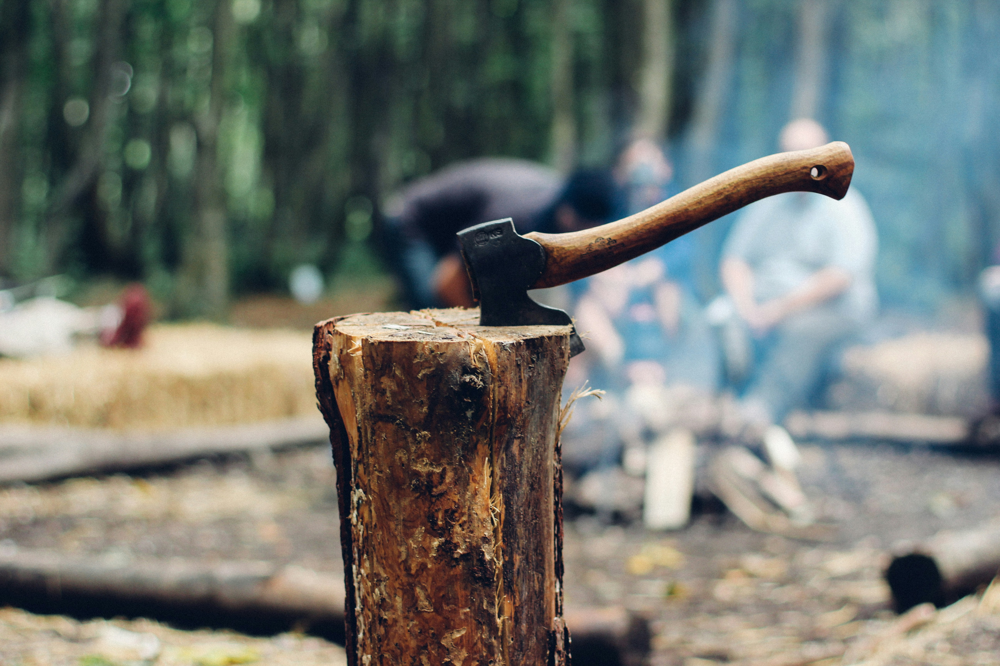

Tree Removal
Tree removal is a meticulous process that requires careful planning and execution to ensure safety and efficiency. Whether it's due to disease, storm damage, or simply to make way for new construction, removing a tree involves several steps and considerations. The first step in tree removal is assessment. A certified arborist or tree removal specialist will inspect the tree to determine its health, size, and the surrounding environment. Factors such as the tree's proximity to structures, power lines, and other trees will influence the removal strategy. Once the assessment is complete, the next step is planning. This involves determining the best method for removing the tree while minimizing risk to property and personnel. In some cases, trees can be felled in one piece if there is enough space and limited obstacles. However, in tight spaces or near structures, the tree may need to be dismantled piece by piece using ropes, pulleys, and rigging techniques. Before any cutting begins, the area around the tree must be cleared and secured. This includes removing any obstacles, such as furniture or vehicles, and marking off a safe perimeter to keep bystanders out of harm's way. If necessary, traffic may need to be redirected to ensure public safety. With the area prepped and the plan in place, the tree removal process can begin. Depending on the size and condition of the tree, chainsaws, axes, and other cutting tools may be used to fell the tree or remove branches. Safety equipment, such as helmets, gloves, and harnesses, is essential to protect workers from falling debris and other hazards. As the tree is removed, branches and debris are carefully lowered to the ground using ropes and rigging equipment. Larger sections of the tree trunk may be cut into manageable pieces and lowered separately. Throughout the process, communication between team members is crucial to ensure everyone is working together safely and efficiently. Once the tree has been completely removed, the remaining stump can be ground down to ground level using a stump grinder. This not only improves the appearance of the landscape but also prevents the stump from sprouting new growth. Finally, the area is cleaned up, and any debris is hauled away. Depending on local regulations, the wood may be recycled, mulched, or disposed of properly. If desired, the space left by the removed tree can be prepared for new landscaping or construction projects. In conclusion, tree removal is a complex task that requires careful planning, skill, and attention to detail. By following a systematic approach and prioritizing safety, tree removal professionals can effectively remove trees with minimal risk to property and personnel.

Tree Maintenance
Tree maintenance is a crucial aspect of landscaping and environmental stewardship, encompassing various practices aimed at ensuring the health, safety, and aesthetics of trees within a landscape. Proper tree maintenance not only enhances the visual appeal of an area but also contributes to environmental sustainability, biodiversity, and public safety. Here's a comprehensive description outlining essential tree maintenance practices: **Inspection and Assessment:** Tree maintenance begins with a thorough inspection and assessment of the trees on the property. Qualified arborists or tree care professionals evaluate the overall health, structural integrity, and potential risks associated with each tree. This assessment helps identify diseased, damaged, or hazardous trees that may require immediate attention. **Pruning:** Pruning is a fundamental tree maintenance practice that involves the selective removal of branches to improve tree structure, health, and appearance. Proper pruning techniques include removing dead, diseased, or crossing branches, promoting proper growth patterns, and enhancing air circulation within the tree canopy. Pruning also helps mitigate safety hazards by eliminating weak or overextended branches that pose a risk of falling. **Tree Health Care:** Maintaining tree health is essential for their long-term vitality and resilience. This involves implementing appropriate fertilization, watering, and mulching practices to provide essential nutrients, moisture, and soil protection. Additionally, monitoring for signs of pest infestation or disease and promptly addressing any issues through appropriate treatment measures is crucial for preserving tree health. **Tree Support Systems:** In some cases, trees may require additional support to mitigate structural weaknesses or prevent failure. Tree support systems such as braces, cables, or guy wires may be installed by trained professionals to stabilize trees with multiple trunks, weak unions, or heavy limbs. These systems help reduce the risk of branch or stem failure, prolonging the lifespan of the tree and ensuring public safety. **Tree Removal:** While tree preservation is the primary goal of tree maintenance, there are instances where tree removal is necessary due to irreparable damage, disease, or safety concerns. Professional arborists utilize specialized equipment and techniques to safely and efficiently remove trees, minimizing disruption to the surrounding landscape and ensuring proper disposal of tree debris. **Storm Damage Prevention and Response:** Trees are susceptible to damage during severe weather events such as storms, high winds, or heavy snowfall. Proactive measures such as tree trimming and pruning can help reduce the risk of storm damage by removing weak or overhanging branches. In the event of storm damage, prompt response by trained professionals is essential to assess and address any hazards posed by damaged trees, ensuring public safety and property protection. **Urban Forestry Management:** In urban and suburban settings, trees play a vital role in enhancing the quality of life for residents and mitigating the impacts of urbanization. Comprehensive tree maintenance programs, including tree planting initiatives, canopy management, and street tree maintenance, are essential components of urban forestry management efforts aimed at preserving and expanding green infrastructure in densely populated areas. In conclusion, effective tree maintenance requires a combination of expertise, diligence, and ongoing commitment to preserving the health, safety, and beauty of trees in both urban and natural landscapes. By implementing sound arboricultural practices and engaging qualified professionals, property owners can ensure the long-term vitality and sustainability of their tree assets while contributing to the overall health and resilience of the environment.

Tree Trimming
Tree trimming is an essential aspect of arboriculture that involves the careful pruning and maintenance of trees to ensure their health, safety, and aesthetic appeal. This practice requires a combination of expertise, knowledge of tree biology, and proper equipment to achieve the desired outcomes while minimizing damage to the tree. Before any trimming begins, it's crucial to assess the tree's overall health and structure. This evaluation helps determine the type and extent of trimming required. Factors such as the tree species, its age, location, and any existing health issues must be taken into account. Additionally, consideration should be given to the tree's surrounding environment, including nearby structures, power lines, and other vegetation. Once the assessment is complete, the trimming process can begin. The primary objectives of tree trimming include: 1. **Safety:** Removing dead, diseased, or damaged branches helps eliminate potential hazards such as falling limbs. Trimming also ensures that branches are clear of utility lines and structures, reducing the risk of property damage and electrical hazards. 2. **Health:** Pruning promotes the overall health and vitality of the tree by removing diseased or insect-infested branches. Thinning the canopy allows for better air circulation and sunlight penetration, which can help prevent the spread of diseases and encourage new growth. 3. **Aesthetics:** Proper trimming enhances the tree's natural shape and appearance, improving its visual appeal and overall landscape design. Careful pruning techniques can create a balanced canopy, remove unsightly branches, and encourage flowering or fruit production in certain species. 4. **Structure:** Trimming can shape the tree's growth patterns and improve its structural integrity. This is particularly important for young trees, as proper pruning during their formative years can help prevent future problems such as weak or overextended branches. There are several common techniques used in tree trimming, including: - **Crown Thinning:** This involves selectively removing branches throughout the canopy to reduce density and improve light penetration and air circulation. - **Crown Raising:** Removing lower branches to provide clearance for pedestrians, vehicles, or structures. - **Crown Reduction:** Trimming back the overall size of the tree's canopy to reduce weight and wind resistance, often necessary for storm damage prevention. - **Deadwooding:** Removing dead or dying branches to prevent decay and reduce the risk of falling debris. Proper pruning cuts are essential to minimize damage to the tree and promote healing. Cuts should be made just outside the branch collar, avoiding leaving stubs or causing unnecessary wounds. Throughout the trimming process, safety is paramount. Certified arborists or trained professionals should handle any work involving climbing or the use of heavy equipment. Protective gear such as helmets, safety glasses, and gloves should be worn at all times. After trimming is complete, proper disposal of the removed branches is necessary. Recycling wood chips for mulch or composting is an eco-friendly option, while larger limbs may require professional disposal. In conclusion, tree trimming is a vital practice for maintaining the health, safety, and beauty of trees in urban and natural landscapes. By following proper techniques and safety protocols, arborists can ensure that trees thrive for years to come while minimizing environmental impact.

Stump Removal
Stump removal is a vital aspect of landscaping and land management, crucial for enhancing the aesthetics, safety, and functionality of outdoor spaces. Whether in residential yards, commercial properties, or forested areas, the presence of unsightly stumps can detract from the overall appeal of the landscape while posing potential hazards to people, pets, and machinery. Therefore, employing effective stump removal techniques is essential for transforming a cluttered and hazardous environment into one that is safe, visually pleasing, and conducive to various activities. Stump removal encompasses a range of methods and technologies tailored to the specific characteristics of the stump, including its size, species, age, and location. One commonly employed technique is mechanical stump grinding, which involves the use of specialized equipment to grind the stump into small wood chips. This method is ideal for medium to large stumps and is highly efficient, leaving behind minimal debris and disturbance to the surrounding area. Additionally, the resulting wood chips can be repurposed as mulch or compost, further adding value to the removal process. For smaller stumps or those located in tight spaces, manual stump removal techniques may be more suitable. This typically involves digging around the stump to expose its roots and then using tools such as axes, saws, and pry bars to loosen and extract it from the ground. While more labor-intensive than mechanical grinding, manual removal allows for greater precision and control, minimizing damage to nearby vegetation and structures. Chemical stump removal is another option, particularly for stumps that are difficult to access or too large to remove manually or mechanically. This method involves the application of specialized chemicals to accelerate the decomposition of the stump over time, eventually causing it to rot and disintegrate. While chemical stump removal offers convenience and cost-effectiveness, it may take several weeks or months to achieve complete decomposition, and care must be taken to ensure the safe handling and disposal of the chemicals involved. In some cases, stump removal may not be feasible or practical, such as when the stump is located in a protected or environmentally sensitive area. In such instances, stump grinding or chemical treatment may be employed to render the stump harmless and prevent regrowth, allowing it to naturally decompose over time. Regardless of the method chosen, proper stump removal requires careful planning and execution to ensure optimal results. Factors such as site conditions, environmental considerations, and safety concerns must be taken into account, and appropriate equipment and techniques selected accordingly. Additionally, proper disposal of stump debris and restoration of the site are essential to minimize the impact on the surrounding landscape and ecosystem. In conclusion, stump removal is an essential aspect of landscaping and land management, necessary for enhancing the safety, aesthetics, and functionality of outdoor spaces. Whether through mechanical grinding, manual extraction, or chemical treatment, effective stump removal techniques can transform cluttered and hazardous environments into safe, visually appealing landscapes conducive to various activities. By employing the appropriate methods and practices, property owners can ensure the efficient and sustainable removal of stumps, improving the overall quality and value of their outdoor spaces.

Stump Grinding
Stump grinding is a crucial step in the process of tree removal, ensuring that all remnants of a felled tree are efficiently and safely eliminated. When a tree is cut down, the stump that remains can be not just an eyesore but also a potential hazard, occupying valuable space and hindering landscaping efforts. Stump grinding offers a solution to this problem, effectively removing the stump and allowing for the restoration of the area to its natural state. At its core, stump grinding involves the use of specialized equipment to grind the stump into small wood chipas or mulch, which can then be easily dispersed or repurposed. This process typically begins with an assessment of the stump's size, location, and surrounding environment to determine the most suitable approach. One of the primary advantages of stump grinding is its efficiency. Unlike traditional stump removal methods, such as digging or using chemicals, which can be time-consuming and labor-intensive, stump grinding offers a much faster solution. With the right equipment and expertise, even large or stubborn stumps can be ground down in a relatively short amount of time, minimizing disruption to the surrounding area. Safety is another key benefit of stump grinding. By effectively grinding the stump below ground level, stump grinding eliminates the risk of tripping hazards and reduces the likelihood of pests or diseases spreading from the decaying wood. This is particularly important in residential areas or high-traffic areas where safety is a primary concern. Moreover, stump grinding is environmentally friendly. Rather than leaving a stump to decay naturally, which can take years and release harmful emissions into the atmosphere, stump grinding accelerates the decomposition process by breaking down the wood into biodegradable mulch. This mulch can then be used to nourish other plants or improve soil quality, making it a sustainable option for tree removal. In addition to its practical benefits, stump grinding can also enhance the aesthetic appeal of a property. By removing unsightly stumps and clearing the way for new landscaping features, stump grinding can help to transform an outdoor space, increasing its beauty and usability.